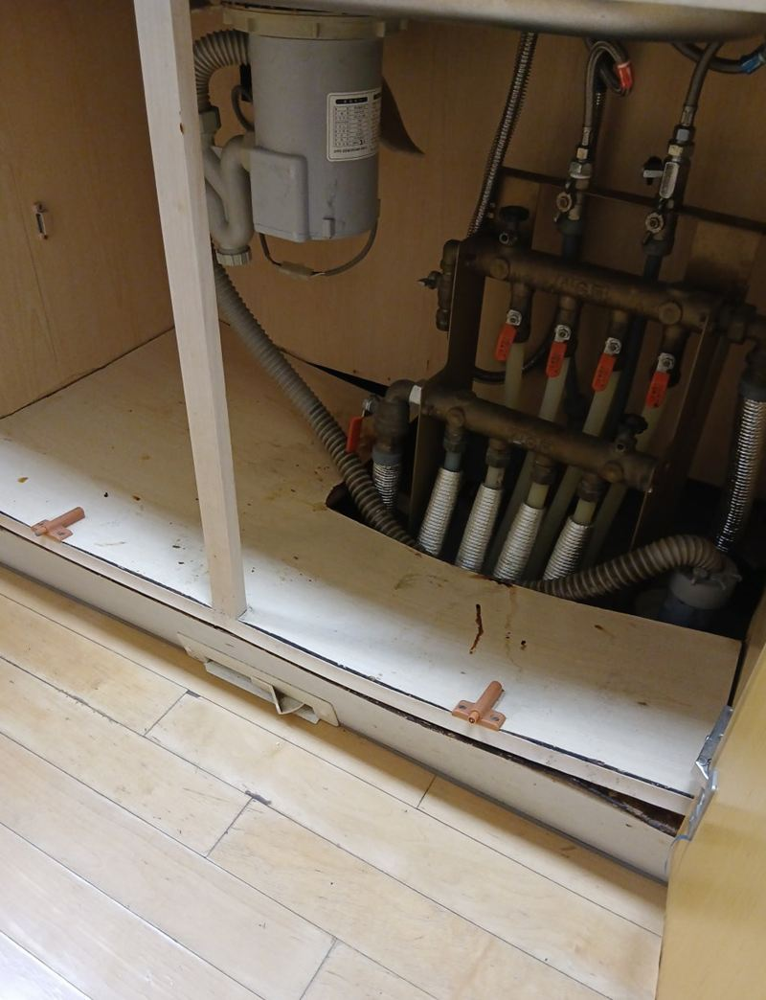
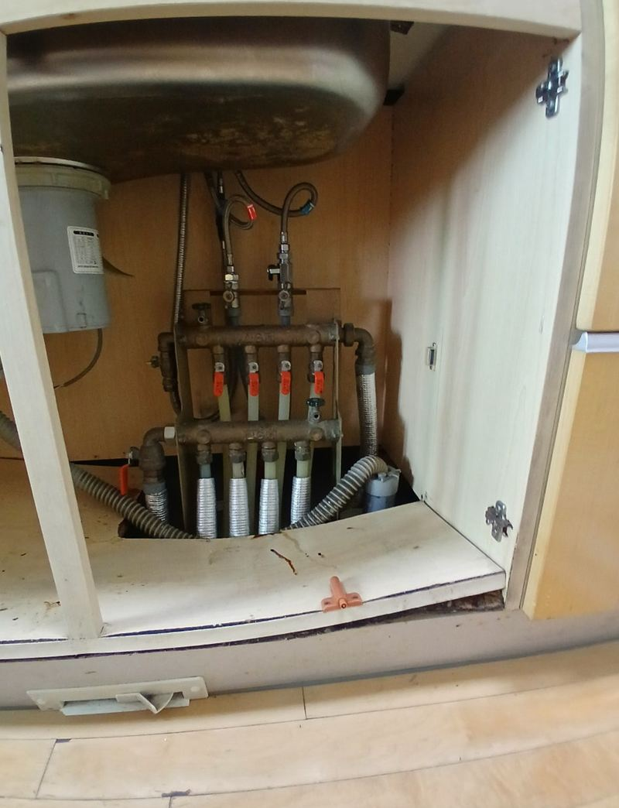
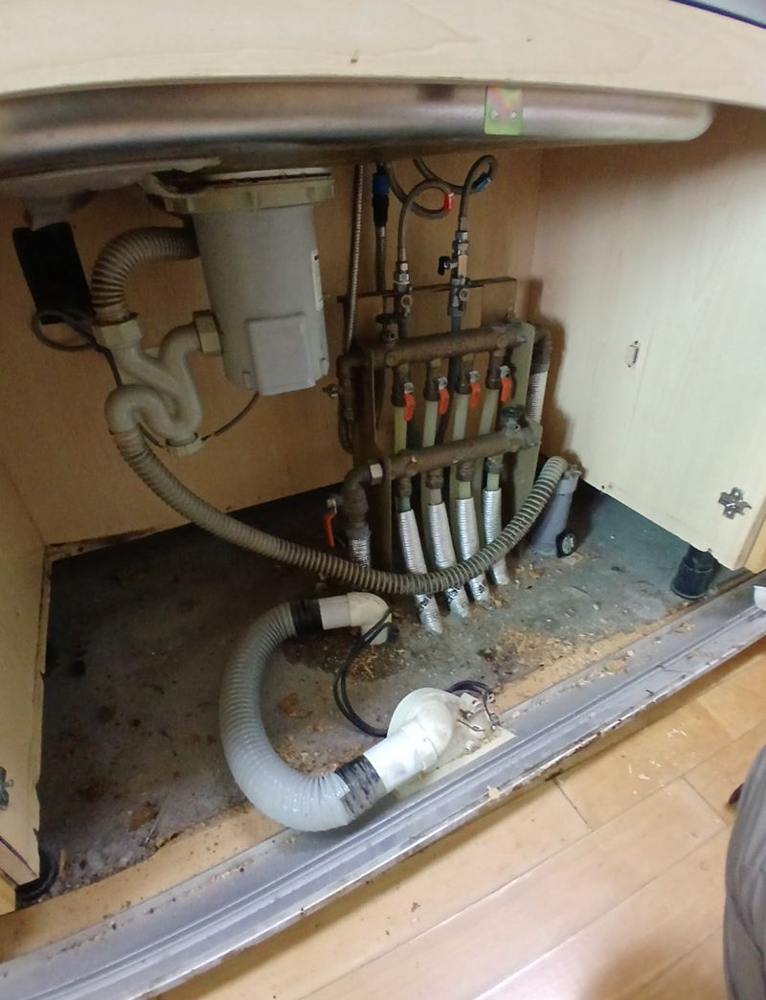
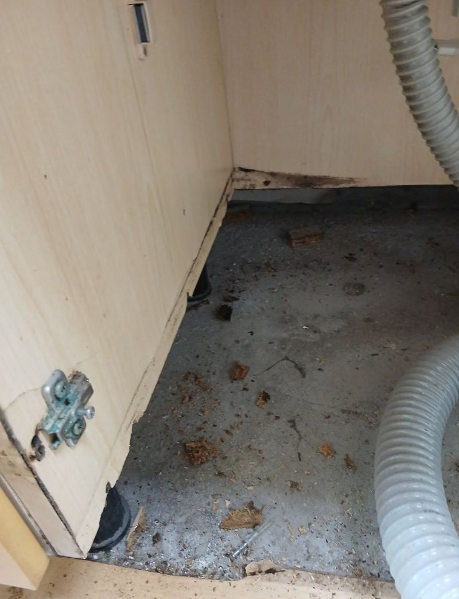
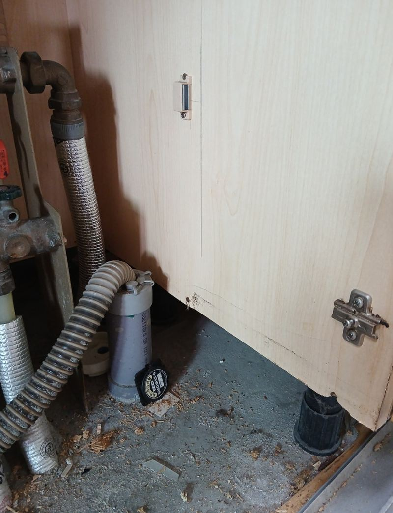
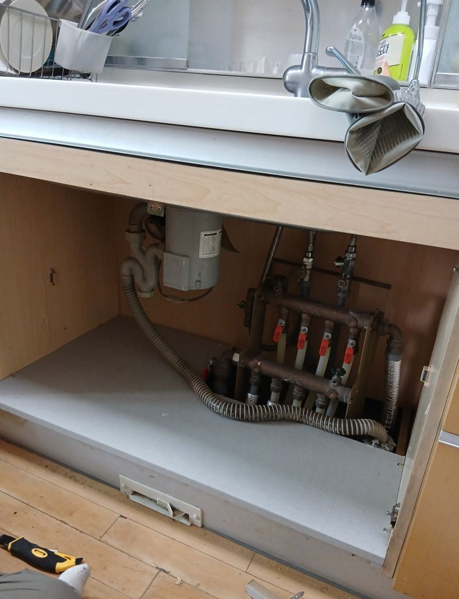

종로 싱크대 하부장 곰팡이 보수 방법
← 밀어서 전후 비교 →
"하부장 바닥이 내려앉아서 물건을 둘 수가 없고, 곰팡이까지 폈어요." 물을 많이 쓰는 싱크대 아래가 오랫동안 습기를 먹어 선반이 물러지고 검게 변한 집이었어요. 싱크대를 통째로 바꾸지 않고, 상한 하부 선반만 걷어 새 합판으로 맞춰 넣었어요.
| 현장 | 서울 종로 내수동 아파트 주방 |
|---|---|
| 증상 | 하부 선반 주저앉음, 습기 흔적, 곰팡이 번짐 |
| 한 일 | 보양 → 곰팡이 선반 철거 → 나사·못 자국 정리 → 합판 재단·설치 → 방수 처리 → 실리콘 |
| 살린 것 | 싱크대 상판·문짝·몸통 |
겉만 닦아서는 다시 피어요
하부장 선반은 대부분 나무 가루를 눌러 만든 판이라, 물을 먹으면 속까지 부풀고 무너져요. 곰팡이도 겉에 보이는 것보다 판 속에 더 퍼져 있어서, 세제로 닦아도 금방 다시 올라와요. 이 집처럼 선반이 내려앉을 정도면 판을 바꾸는 게 맞아요.


선반만 바꾸는 순서
보양하고 철거
곰팡이 포자가 주방에 흩날리지 않게 주변을 덮고, 상한 선반을 뜯어냈어요. 남은 나사와 못도 깨끗이 정리했어요.


합판 맞춤 재단
하부장 안쪽 치수를 재서 준비해 간 합판을 잘랐어요. 딱 맞아야 흔들림과 틈이 없어요.

방수 처리와 마감
새 선반을 넣은 뒤 물이 닿기 쉬운 면에 방수 처리를 하고, 둘레를 실리콘으로 막아 습기가 다시 스며들지 않게 했어요.

하부장 곰팡이, 다시 안 생기게
- 배관 연결부부터 보세요배수 호스나 급수 연결에서 조금씩 새는 물이 가장 흔한 원인이에요.
- 젖은 수세미·행주를 넣지 마세요문 닫힌 하부장 안은 습기가 빠지지 않아요.
- 가끔 문을 열어 환기해 주세요특히 장마철에는 하루 한 번이라도 열어 두면 좋아요.
- 바닥 매트를 깔아 두세요물이 떨어져도 판까지 바로 스며들지 않아요.
하부장 바닥, 이런 상태면 교체예요
- 손으로 누르면 들어가요판 속이 물러진 상태라 다시 단단해지지 않아요.
- 검은 얼룩이 넓게 퍼졌어요곰팡이가 판 속까지 번진 경우가 많아요.
- 가장자리가 부풀어 일어났어요물을 먹은 판이 부푼 거예요. 그대로 두면 더 무너져요.
하부장 곰팡이 보수 질문
배관에서 물이 새고 있으면요?
새는 곳을 먼저 막지 않으면 새 선반도 금방 상해요. 연결부를 같이 점검해요.
하부장 문짝도 부풀었는데 같이 되나요?
문짝 아래가 부풀었다면 문짝 교체를 같이 검토해요. 색 맞춤은 샘플로 비교해요.
곰팡이 냄새는 없어지나요?
상한 판을 걷어 내면 대부분 줄어요. 습기 원인을 같이 잡아야 다시 안 나요.
싱크대 전체를 바꿔야 하는 경우는요?
몸통 옆판과 뒤판까지 썩었다면 교체가 나을 수 있어요. 사진을 보고 판단해요.
작업 시간 동안 주방을 쓸 수 있나요?
하부장만 비우면 되고 상판과 수전은 그대로라 금방 다시 쓸 수 있어요.
합판 말고 다른 재질도 되나요?
물에 강한 판재로 바꿀 수도 있어요. 쓰임을 듣고 골라요.
하부장 뒤 벽에도 곰팡이가 있으면요?
선반을 뺀 김에 뒤쪽 벽 상태를 같이 보고 정리해요.
하부장 선반만 교체하면 오래가나요?
습기 원인을 같이 잡으면 오래 써요. 방수 처리한 새 판은 이전보다 물에 강해요.
싱크대가 오래돼 문짝이 처졌어요
경첩 조정이나 교체로 바로잡을 수 있어요. 선반 보수 때 같이 봐 드려요.
다른 싱크대·수납장 현장
하부장 문을 열고 바닥과 배관 쪽을 찍어 보내 주세요.
전화 상담 010-4517-9872